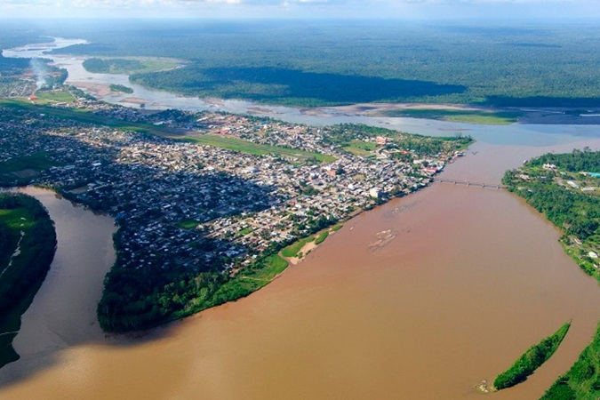

Provincia de Orellana. Provincia de la Región Centro Norte de Ecuador, la capital de la provincia es El Coca más conocida como «Coca». Es una de las provincias más nuevas del país, provincia 22, pues fue creada en 1998 al ser separada de Napo. Inicialmente su nombre iba a ser provincia de Amazonas pero ante un potencial reclamo de Perú se decidió denominarla Orellana. La población es de 136.396 habitantes; sus habitantes nativos pertenecen principalmente a las nacionalidades waorani, schuar y kichwa.
La provincia ecológica del Ecuador es la más joven del país. Entre sus
riquezas se encuentra el petróleo y la madera, además cuenta con una
selva exuberante, paisajes encantadores, flora y fauna exclusiva y
conocida en todo el mundo. Sus habitantes nativos pertenecen
principalmente a las nacionalidades Huaorani, Schuar y Quichua. La
provincia tiene una superficie de 20.733 km², que en términos de
extensión es similar a la de El Salvador. Entre sus principales
atractivos se puede mencionar el Parque Nacional Yasuní, declarado por
la UNESCO como Reserva de Biosfera, el volcán Sumaco rodeado de una
extensa biodiversidad y un mirador natural de la meseta amazónica. Coca
es un centro turístico, lugar donde se encuentra la Catedral de Nuestra
Señora del Carmén, la Laguna de Taracea, el complejo turístico Samana
Huasi, el museo de Cicame, el jardín botánico Mushu Yura, Pañacocha y el
Río Napo son parte de sus atractivos.
La Provincia de Orellana es también la única provincia amazónica que no
tiene fronteras con una provincia de la serranía ecuatoriana. La cuenca
del río Napo es una de las más importantes de la región amazónica y del
país; numerosas comunidades indígenas están asentadas en sus riberas,
sus dos principales afluentes: Coca, en las estribaciones de la
cordillera Oriental; y el río Aguarico en plena selva Amazónica. Estos
afluentes vendrían a ser el principal sistema hídrico de la Provincia.